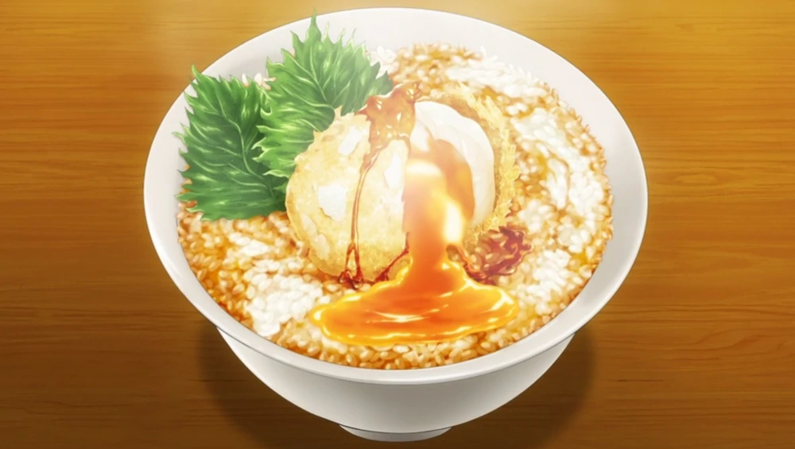

Chicken Egg Tempura

A frozen egg that is deep-fried in tempura batter, producing a soft-boiled tempura egg over rice.
Though the dish uses common, low-grade eggs, the dishes' power comes from this fact as no other egg grade can produce the flavor that dish can create.
Ingredients
- 4 frozen Eggs
- 3 tablespoons Tempura flour
- 4 tablespoons water
- Vegetable oil (for deep frying)
- Soy Sauce
- Mirin
- Bonito Dashi Stock
- Rice
Garnish?
- 2 Fried Perilla Leaves
- Seasoning (as desired)
How to Cook?
- Mix Tempura flour and water in a bowl.
- Peel the frozen eggs, dust with flour, then coat with the batter (1.).
- Deep fry in oil (2 at a time is better) at 170C (338F) for 6 minutes. When they float up to the surface, flip them over to cook evenly.
Return to Homepage